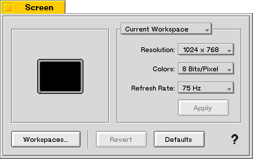

| The Interface Kit Table of Contents | The Interface Kit Index |
Derived from: public BView
Declared in: be/interface/Box.h
Library: libbe.so
A BBox is a purely cosmetic and organizational view that draws a labeled border around its (view) children. The border and label are drawn within the BBox's frame rectangle.
The BBox's label can be a string or it can be another view, such as a control. For example, a popup menu might be used as the BBox's label, to let the user select a group of options to view in a preference panel:

|
Initializes the BBox by passing the frame, name, resizingMode, and flags to the BView constructor, and sets the style of its border to border. Three border styles are possible:
| B_PLAIN_BORDER | The border is a simple line, lighter on the left and top than on the right and bottom so that the box looks raised from the surrounding surface. |
| B_FANCY_BORDER | The border is a fancier line that looks like a 3D groove inset into the surrounding surface of the view. |
| B_NO_BORDER | There is no border. This option is not that useful for a BBox object; it turns the box into something other than a box. |
The constructor also sets the font for displaying the BBox's label to the system bold font (be_bold_font). However, the new object doesn't have a label; call SetLabel() to assign it one.
See also: SetLabel()
|
Frees the label, if the BBox has one.
|
Makes the BBox's background view color and its low color match the background color of its new parent.
|
Draws the box and its label. This function is called automatically in response to update messages.
|
Makes sure that the parts of the box that change when it's resized are redrawn.
See also: BView::FrameResized()
|
These functions set and return the style of border the BBox draws—B_PLAIN_BORDER, B_FANCY_BORDER, or B_NO_BORDER. The border style is initially set by the BBox constructor.
|
These functions set and return the label that's displayed along the top edge of the box. SetLabel() copies string and makes it the BBox's label, freeing the previous label, if any. If string is NULL, it removes the current label and frees it.
Alternately, you can use the second form of SetLabel() to specify a view to be used as the BBox's label. This view can be anything, including controls.
Label() returns a pointer to the BBox's current label, or NULL if it doesn't have one (or the label is a view).
LabelView() returns a pointer to the BView that's being used as the BBox's label, or NULL if either there is no label, or the label is a string.
RETURN CODES
B_OK. No error occurred.
The Archive() function adds the following fields to its BMessage argument:
| Field | Type code | Meaning |
|---|---|---|
| "_label" | B_STRING_TYPE | The box's descriptive text. |
| "_style" | B_BOOL_TYPE | Exists and is true if the style is not B_FANCY_BORDER. |
| The Interface Kit Table of Contents | The Interface Kit Index |
Copyright © 2000 Be, Inc. All rights reserved..